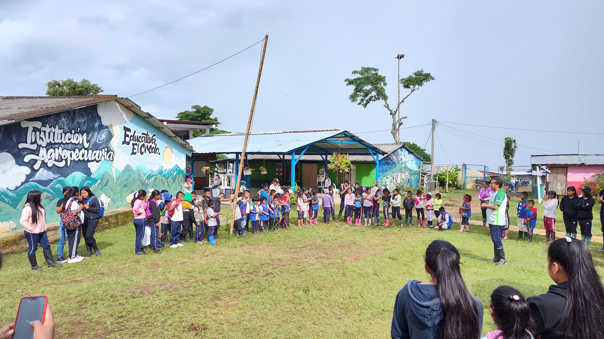
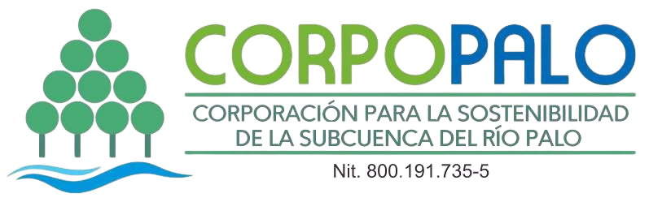
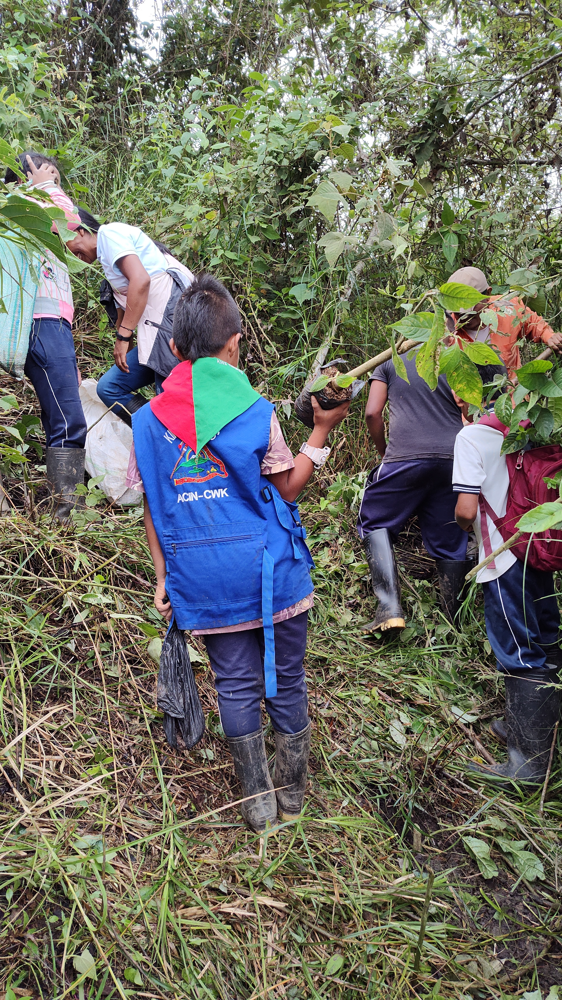
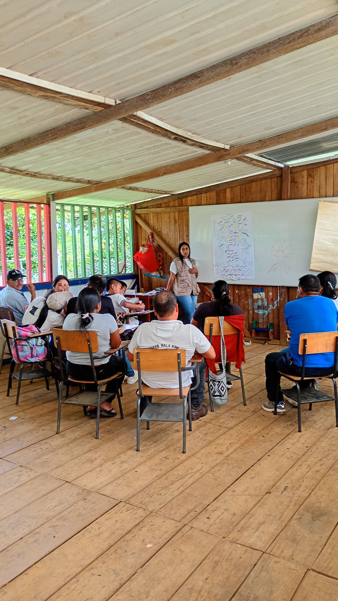
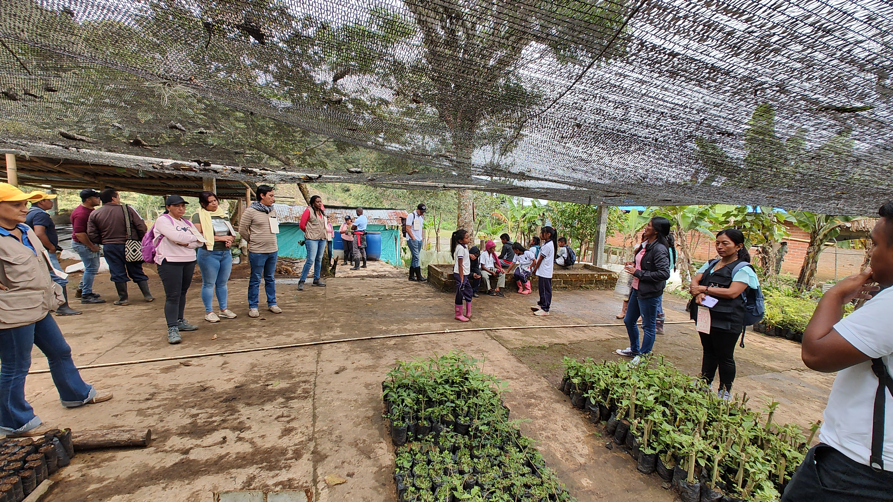
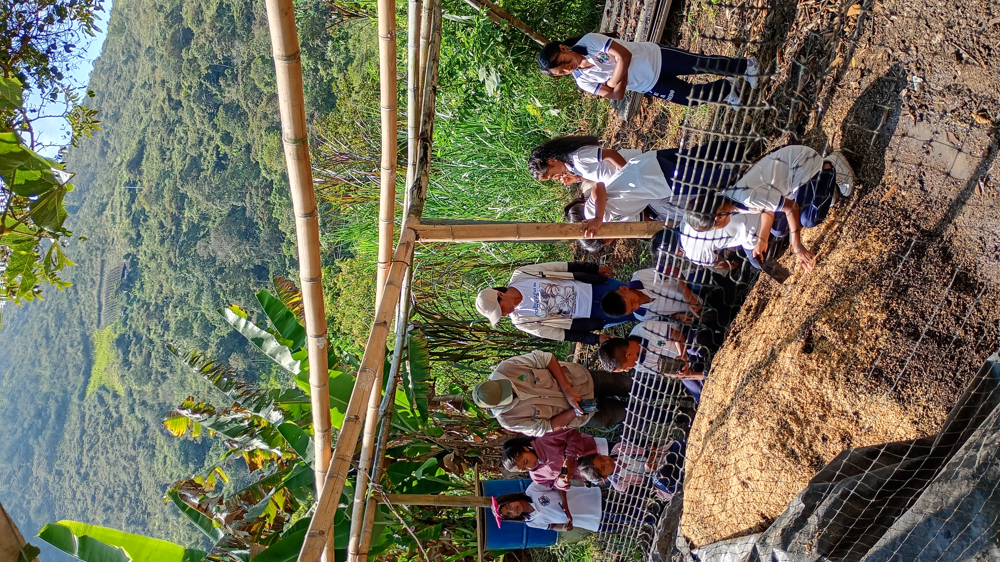

Vivero Escolar - I.E.A. El Credo
Vereda El Credo
Caloto, Cauca
Red de Viveros Árboles para la Vida – CORPOPALO

14 años
5.000 árboles
| Grupo | Cantidad |
|---|---|
| 👧 Niñas | 8 |
| 👦 Niños | 10 |
| 👩 Mujeres adultas | - |
| 👨 Hombres adultos | 1 |
| Total | 19 |
El vivero escolar Emprendedores de Semillas de Vida nació como una respuesta comunitaria a la escasez hídrica que afectó la vereda y se ha consolidado como una estrategia de conservación ambiental centrada en la protección de nacimientos de agua.
Su trabajo integra la producción de especies nativas, frutales y forestales, fortaleciendo la biodiversidad y promoviendo una relación armónica entre la comunidad y el territorio.
Conozca cómo evoluciona este vivero mes a mes: acciones técnicas, encuentros comunitarios, aprendizajes y registro fotográfico.
Explorar la bitácora →El vivero escolar fue creado en el año 2011 con estudiantes de grado octavo, iniciando en una pequeña estructura de aproximadamente 12 metros cuadrados donde se producían especies como nacedero, chachafruto y flor amarillo.
Su origen estuvo estrechamente relacionado con la crisis hídrica vivida por la comunidad en 2010, situación que motivó a docentes, estudiantes y familias a desarrollar acciones concretas para la protección de los nacimientos de agua presentes en la vereda.
Con el acompañamiento técnico y pedagógico de CORPOPALO, el proceso fue creciendo progresivamente. La recuperación de una mateguadua que se encontraba en estado crítico se convirtió en una experiencia emblemática que permitió evidenciar la importancia de proteger y aislar las fuentes hídricas.
Con el paso de los años, el vivero fortaleció su infraestructura gracias al trabajo colectivo de docentes, estudiantes y padres de familia, convirtiéndose en un referente local de educación ambiental y restauración ecológica.
Actualmente ha suministrado miles de árboles para procesos de conservación tanto dentro como fuera de la vereda, incluyendo solicitudes realizadas por comunidades vecinas y por el Cabildo.
El grado décimo asume la responsabilidad principal del mantenimiento y funcionamiento del vivero.
Las actividades incluyen:
Los estudiantes de grado quinto participan activamente en la preparación de sustratos, embolsado y organización de plántulas, mientras que otras actividades involucran a toda la comunidad educativa.
El vivero forma parte del área de conocimiento denominada "Territorio, Naturaleza y Producción", un espacio pedagógico que integra la producción de especies vegetales con la conservación ambiental y el aprendizaje práctico de los estudiantes.
| Nombre Común | Nombre Científico |
|---|---|
| Nacedero | Trichanthera gigantea |
| Flor amarillo | Senna spectabilis |
| Chicalá | Tecoma stans |
| Cedro rosado | Cedrela odorata |
| Guamo machete | Inga spectabilis |
| Chachafruto | Erythrina edulis |
| Guadua | Guadua angustifolia |
| Gualanday | Jacaranda caucana |
| Guayacán rosado | Tabebuia rosea |
| Guayacán amarillo | Handroanthus chrysanthus |
| Guayacán de Manizales | Lafoensia acuminata |
| Nogal cafetero | Cordia alliodora |




Responsable del proceso:
Luber Morales
Rol:
Docente dinamizador
Teléfono:
[TELEFONO]
Correo:
[CORREO]